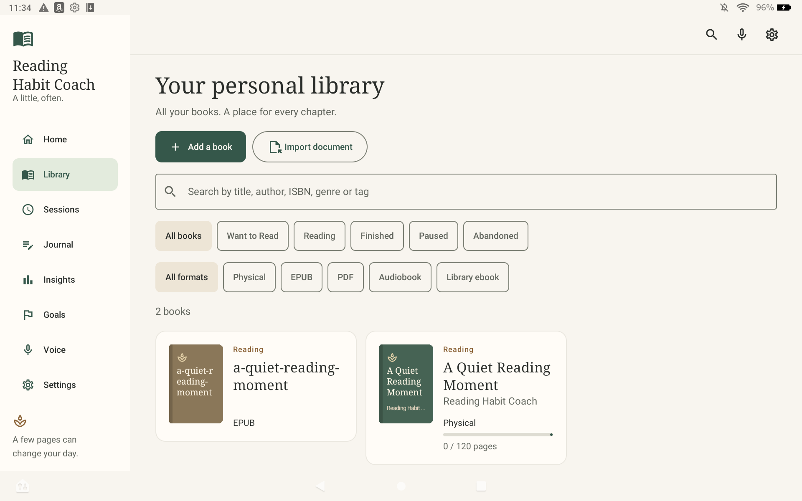

<!doctype html><html lang="en-GB"><meta charset="utf-8"><style>*{box-sizing:border-box}body{margin:0;background:#f8f5ef;color:#292c29;font-family:system-ui,sans-serif;width:1920px;height:1200px;overflow:hidden}header{padding:35px 64px 28px;display:flex;align-items:center;gap:32px;border-bottom:1px solid #dedbd1}h1{font:42px/1.1 Georgia,serif;margin:0;color:#35574a}p{font-size:21px;max-width:800px;margin:12px 0 0;color:#62665e}.brand{margin-left:auto;font:22px Georgia,serif;white-space:nowrap;color:#35574a}main{display:flex;align-items:center;justify-content:center;height:1000px;padding:28px 70px 12px}img{max-height:930px;max-width:100%;object-fit:contain;border:1px solid #d8d8ca;box-shadow:0 15px 45px #35574a14}footer{position:absolute;bottom:12px;left:64px;font-size:13px;color:#62665e}</style><header><div><h1>Personal Book Library</h1><p>Organise physical books, ebooks and audiobooks.</p></div><div class="brand">Reading Habit Coach</div></header><main></main><footer>Early-access 0.1.0 · Original QA sample content</footer></html>